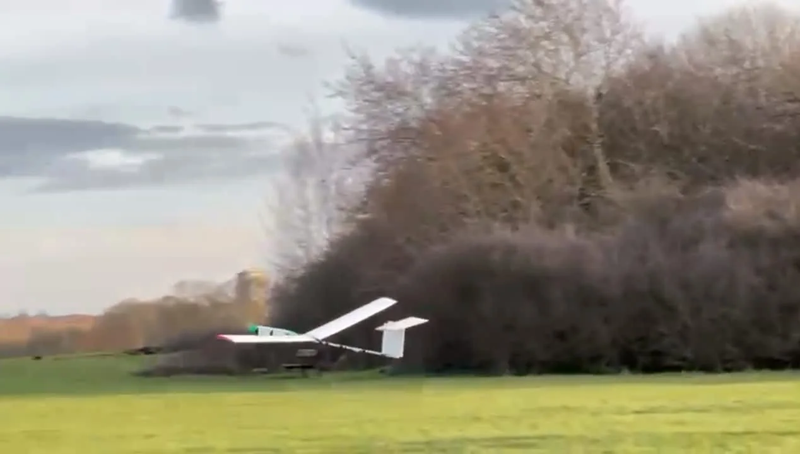
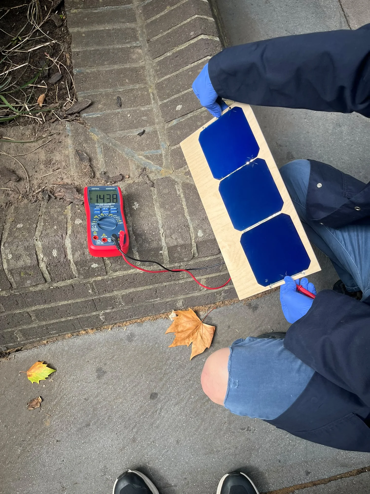
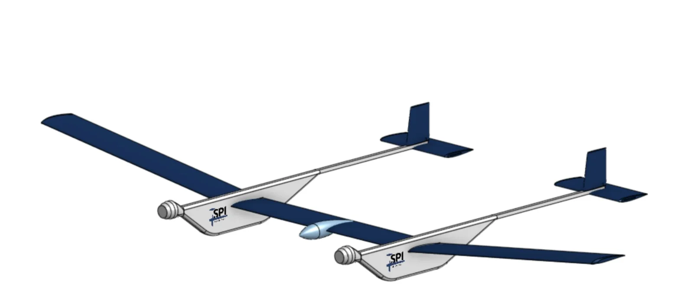
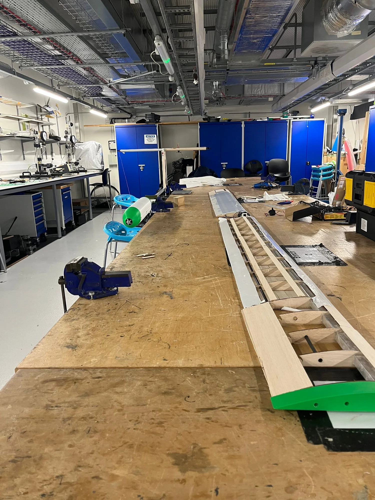

Aircraft
Every watt.
Every gram.
We are developing the airframe, energy systems and controls for flight through successive days and nights.
The
demonstrator.
Our January 2026 demonstrator helped us refine launch procedure and flight controls for the next airframe.
Aluminium and carbon fibre spars, balsa skin and 3D printed components keep the structure light. The first flight ran on batteries, with provision for solar cells.
Aerodynamics
We study wing shape, drag and how the wing flexes in flight to reduce the power needed to stay airborne.
Structures
We design the airframe around stiffness, weight and assembly, from the wing spars to the joints between sections.
Solar + Storage
Solar collection, battery capacity and power demand have to work together to sustain flight through the night and recharge the following day.
Flight Controls
We develop the systems that guide the aircraft and record its behaviour in flight, helping us compare its performance with our predictions.
2026 programme
Our next
aircraft.


